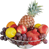
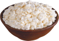
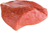
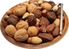
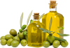

Зерновые продукты  |
6-8 |
✓1 кусочек хлеба,
✓30г крупы или сухого завтрака,
✓½ тарелки* каши или макарон
|
Хлеб(лучше цельнозерновой), пита, крупы, хлебцы, крекеры и т.п. |
Главные источники энергии и пищевых волокон |
Овощи |
4-5 |
✓1 тарелка резаных листовых овощей,
✓½ тарелки приготовленых овощей (варка, тушение и т.д.),
✓170 мл овощного сока без сахара
|
Помидоры, картофель, морковь, горошек, кабачки, любая капуста, шпинат, фасоль и т.д. |
Богатые источники калия, магния и пищевых волокон |
Фрукты |
4-5 |
✓170 мл сока,
✓среднего размера фрукт,
✓½ чашки** свежик или замороженных фруктов, ¼ чашки сухофруктов
|
Цитрусовые, виноград, бананы, абрикосы, персики, ягодв, финики, соки без добавок сахара |
Богатые источники калия, магния и пищевых волокон |
Молочные продукты (обезжиренные или с низким содержанием жира) |
2-3 |
✓220-230 мл молока,
✓1 чашка йогурта,
✓40-45 г сыра
|
Молоко, кисломолочные продукты, творог, сыры - все обезжиренные или низкосодержащие(1%) |
Богатые кальцием и белками |
Постное мясо |
<170г |
✓80-90 г приготовленного мяса, птицы или рыбы
|
Мясо постное, без видимого жира, птицы без кожи. Рыба может быть жирной. |
Богаты белками и магнием |
Орехи, семечки, сухие фасоль и горох |
4-5 в неделю |
✓40-45 г орехов
✓2 ст.л. семечек
✓½ тарелки приготовленной фасоли или гороха
|
Любые орехи, семечки, подсолнечника и тыквы, фасоль, горох |
Богатые энергией, магнием, калием, белками и волокнами |
Жиры и масла |
2-3 |
✓1 ст.л. майонеза,
✓1 ч.л. растительного малса,
✓1 ч.л. спреда,
✓2 ст.л. салатного соуса
|
Спреды (магкие маргарины), низкожирный майонез, салатные соусы, любые растительные масла |
Источники жирных кислот |
Сладости |
<5 в неделю |
✓1 ст.л. сахара,
✓1 ст.л. варенья
|
Сахар, варенье, конфеты, заефир, пастила, мороженое |
Сладости должны быть с низким содержанием жира |